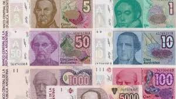

Argent Argentin
Un peu d'histoire
Le "peso" est la monnaie légale de la République argentine depuis 1992, date à laquelle il a remplacé la monnaie australe. Il était connu sous le nom de « peso convertible » en raison de sa parité avec le dollar depuis sa création jusqu'à la modification de la loi n° 23 928 sur la convertibilité en 2002. Il a commencé à circuler le 1er janvier 1992 en vertu de la loi de 1991 précitée.
À la suite des hyperinflations survenues à la fin de la présidence de Raúl Alfonsín (1983-1989) et au cours de la première année du gouvernement de Carlos Menem (1989-1999), une règle monétaire à taux de change fixe a été établie et la création de cette nouvelle monnaie cône, ce qui équivaut à 10 000 australes. Depuis lors, sa valeur monétaire était égale à 1 dollar américain par peso, jusqu'au 7 janvier 2002, date à laquelle le Sénat a sanctionné la dévaluation du peso, après plus d'une décennie de parité avec le dollar. Depuis l'abrogation partielle de la Loi de Convertibilité en 2002, sous le gouvernement d'Eduardo Duhalde, en raison de la forte crise politique et économique, le dollar a augmenté de 40,25% par rapport à la monnaie argentine (de 1 peso à 1,40 pesos/dollar), perdant un tiers de sa valeur par rapport à la devise américaine.
Durant le mandat de Néstor Kirchner, le peso a été dévalué de 9 % (de 2,87 à 3,13 pesos par dollar) puis, sous Cristina Fernández de Kirchner, de 211 % (de 3,13 à 9,74 pesos par dollar),8 encadré dans le cadre du « géré ». politique de flottement menée par la Banque centrale de la République argentine (BCRA), avec pour mandat de préserver les réserves monétaires et de garantir la compétitivité des changes, et d'assurer le paiement de la dette extérieure. Fin 2011, des mesures de contrôle des changes ont été mises en œuvre, qui ont réussi à réduire la fuite des capitaux de 85%, même si les réserves internationales de la BCRA ont également diminué par rapport au record historique du 26 janvier 2011, lorsqu'elles s'élevaient à 52,654 millions de dollars, atteignant 31 433 millions de dollars au 5 janvier 2015. Une conséquence de ces mesures a été l’apparition de taux de change multiples et d’un marché parallèle (appelé familièrement le dollar bleu), auquel ont accès les particuliers et les entreprises. Ces mesures seraient assouplies le 27 janvier 2014, après une forte dévaluation les jours précédents, avec un montant ou quota d'achat autorisé déterminé par l'AFIP en fonction de la capacité contributive de l'intéressé, ne dépassant pas 20% du leurs revenus. Le 17 décembre 2015, une semaine après l'investiture de Mauricio Macri comme président, le taux de change a été libéré et l'acquisition de devises étrangères pour la population a été assouplie. Ce jour-là, le peso a connu une dévaluation de 42% sur le marché officiel, passant de 9,83 à 13,95 pour un dollar. Il s’agit de la plus grande dévaluation contenue et enregistrée du peso argentin depuis 1991. À partir de ce moment, le taux de change est devenu flottant sous administration. Le pays avait besoin de sortir d'une situation de défaut en raison du procès des fonds vautours contre l'Argentine. En juillet 2017, le peso s'échangeait à 17,66 pour un dollar, subissant une dépréciation de 82% depuis la libéralisation du marché des changes. cette année-là, la monnaie argentine s'est classée parmi les devises émergentes les moins performantes en 2017. En mai 2018, le peso s'échangeait à 24,00 par dollar, après avoir connu une dépréciation de 144 % par rapport à la monnaie américaine depuis le début de l'administration Macri. En août 2018, le peso a de nouveau été dévalué, dépassant 30 pesos par dollar, alors qu'en août 2018, le peso était à nouveau dévalué, dépassant 30 pesos par dollar. Dans les pays voisins comme le Brésil et l'Uruguay, le peso était évalué à 40 pour un dollar. Accumulant une dépréciation annuelle de 75% et une dépréciation de plus de 200% par rapport au dollar depuis décembre 2015. Fin août 2018, le peso s'échangeait à près de 40 unités pour un dollar, s'étant déprécié de 304% depuis l'arrivée de Mauricio. Macri et accumulant 125 % entre les douze mois précédents.
Le 12 août 2019, le peso a clôturé à 57,30 unités pour un dollar sur le marché officiel, ce qui implique une dépréciation de 21,3 % en quelques heures. L'ancien ministre de l'Économie, Martín Redrado, a dénoncé que le gouvernement avait décidé de ne pas intervenir sur le marché des changes, soulignant qu'il y avait un ordre de la Banque centrale pour que « le dollar aille là où il doit aller, pour que les Argentins » Apprenez pour qui voter. » Macri, pour sa part, a nié ces déclarations et a souligné qu'il n'y avait pas d'ordre à cet égard. La plainte est en cours de règlement au tribunal. Le 2 septembre, le gouvernement a fixé une limite d'achat de 10 000 dollars par mois ou son équivalent dans d'autres devises, et dans les semaines suivantes, malgré l'intervention officielle de la Banque centrale, le peso a continué de se dévaluer et a touché, le vendredi 25 octobre, un minimum de 65 unités par dollar Le 28 octobre, la Banque centrale a émis un ajustement pour protéger la stabilité des changes, limitant l'achat à un maximum de 200 dollars ou son équivalent, par mois et par personne, attentif à la baisse du stock de réserves. et le début de la transition entre le gouvernement sortant et celui élu. En décembre 2019, avec les mesures dictées par le gouvernement Macri et après l'investiture du nouveau président Alberto Fernández, le taux de change officiel était proche de 63 pesos pour un dollar. Le 23 décembre, la taxe PAIS a été créée par la loi 27.54142. pendant cinq exercices fiscaux, facturant 30% pour les achats de devises à des fins d'épargne sur le prix officiel pour les résidents argentins, l'achat de billets d'avion à l'étranger et autres, bien que sur le marché noir, il s'échangeait à environ 78,50 pesos. Après cette mise en œuvre, l'accès. Le dollar officiel était limité à certaines activités (médicales, achat de livres, entre autres), donc à partir de ce moment, cette nouvelle valeur doit être prise contre les personnes qui veulent acheter des devises étrangères. Quelques mois plus tard, vers la mi-août 2020, le prix officiel était d'environ 77,50 unités pour un dollar et le taux de change informel a grimpé jusqu'à 135 pesos, une valeur proche de celle enregistrée dans le dollar financier appelé « cash avec règlement » (CCL). Le 16 septembre 2020, la Banque centrale a annoncé, par une résolution, une surtaxe supplémentaire de 35 % pour l'achat de devises étrangères à des fins d'épargne, ainsi que pour la consommation de cartes pour des biens et services à payer en devises étrangères. Après les annonces, le marché noir était coté à 145 pesos pour chaque dollar ainsi que dans les pays voisins dans les maisons de change à la frontière uruguayenne pour les voyageurs, tandis que celui obtenu par l'achat et la vente d'obligations - communément appelé MEP - était coté à 145 pesos pour chaque dollar. 135 pesos pour chaque dollar.
Fin janvier 2022, le taux de change officiel était de 110 dollars pour un dollar5, tandis que le dollar informel était d'environ 212 dollars pour un dollar, après avoir atteint un sommet de 223 dollars avant l'annonce de l'accord de dette avec le FMI. Fin juillet 2022, le dollar informel a de nouveau connu une tendance à la hausse, le laissant à un prix de 340 pesos par dollar, marquant un record historique, alors que le prix officiel était d'environ 130 dollars. À la mi-mai 2023, le dollar bleu s’échangeait à près de 500 pesos. Dans le même temps, l'écart entre le prix du dollar officiel et celui du dollar bleu a dépassé 106 %. Le 12 juillet, le dollar bleu a dépassé les 500 pesos, s'échangeant à 503 pesos pour un dollar. Le 19 juillet, le dollar bleu a atteint 525 pesos. Le lundi 24 juillet, le dollar bleu a atteint 552 pesos, tandis que le 4 août, il était coté à 574 pesos. Le dollar bleu a continué à augmenter jusqu'à atteindre 600 pesos le 9 août. Le 15 août, il a atteint 715 pesos et deux jours plus tard, il a atteint 800 pesos.

Austral
Vieille pièce de monnaie argentine

1000 pesos argentins
La monnaie argentine actuelle équivaut à un euro

Euro
Un euro équivaut à 1000 pesos argentins.